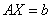

2.7 矩阵与线性方程组
一、矩阵与线性方程组
| 由矩阵与矩阵的乘法，我们已有线性方程组的矩阵表示，其中 对于一般的线性方程组，需要解决以下三个问题： （1）如何判定方程组是否有解？ （2）如果方程组有解，它有多少个解？ （3）如何求出线性方程组的全部解？ 我们从求解线性方程组的方法谈起，读者可回忆，在初等数学中，求解线性方程组的消元法，无非是对线性方程组作下列三种变换： （1）互换两个方程的位置； （2）用一个非零数乘某一个方程； （3）把一个方程的倍数加到另一个方程上去，使原先线性方程组变成一个阶梯形方程组，而且它们是同解的。 现在，对于n元非齐次线性方程组，它与其增广矩阵是一一对应的，即增广矩阵的每一行就代表了线性方程组中每一个方程，那么消元法对线性方程组的三种变换，巧好就是在增广矩阵上所做的三种初等行变换，而化成的阶梯形方程组就对应一个阶梯形矩阵。因而从现在开始，我们讲到线性方程组的消元法，就是指对线性方程组的增广矩阵施行有限次初等行变换化成阶梯形矩阵，或简化阶梯形矩阵，从而可写出相应的阶梯形方程组，然后求出方程组的解。 注意：绝不能做初等列变换。 |
|
例1：解线性方程组 解：用矩阵的初等行变换化方程组的增广矩阵为简化阶梯形矩阵。 由最后简化阶梯形矩阵，与之相应的方程组与原方程组同解，它就是即为原方程组的唯一解。 例2：解线性方程组。 解： ，则原方程组与阶梯形方程组 同解。 但这个方程组最后一个方程为“ 由本例说明：若在消元过程中，出现“0=非零数”这样的方程（称为矛盾方程），方程组就无解；不出现矛盾方程，方程组必有解。 |
|
我们把这两种情况与矩阵的秩联系起来，对例2不难看出，但
例3：解线性方程组。 解： 可见，线性方程组有解。 与原方程组同解方程组为 第三个方程“0=0”，对任意均满足，称为多余方程可舍去。 即有 或………（1） 当给以任意取一个数，代入上面等式，就可得出方程组的一个解，说明方程组有无穷多解，称为自由未知量，为约束未知量，把表达式（1）称为方程组的一般解，它给出约束未知量由自由未知量表示的方式。 |
|
例1与例3均是方程组有解的例题，但例1是唯一解，例3是有无穷多解，这又与什么有关？例1与例3均为3元非齐次线性方程组，即n=3，而例1 ，不出现自由未知量，故为唯一解，而对例3
对n元齐次线性方程组 |
|
|
例4：解线性方程组 解：系数矩阵，，所以方程组有非零解。 由简化阶梯形矩阵，可得方程组一般解为：，为自由未知量。 说明：当方程组有解时，把增广矩阵（或系数矩阵）利用初等行变换化为简化阶梯形矩阵很有必要，因为可以据此直接写出方程组的或唯一解或一般解。写一般解的方法是：把主元相对应的未知量取为约束未知量，其余 |